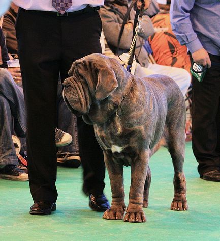
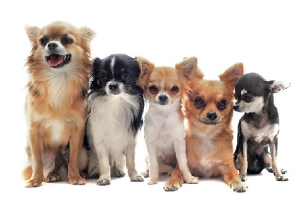
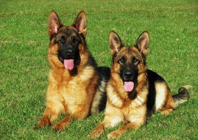
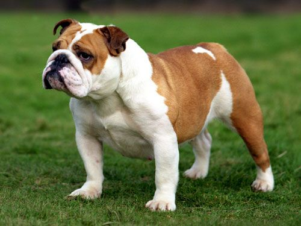
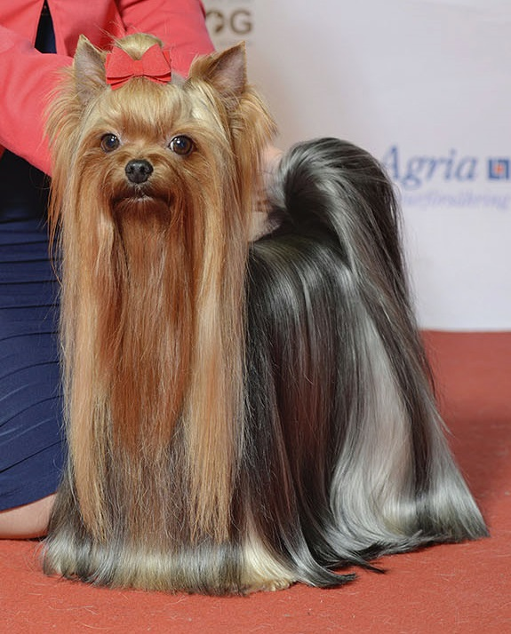
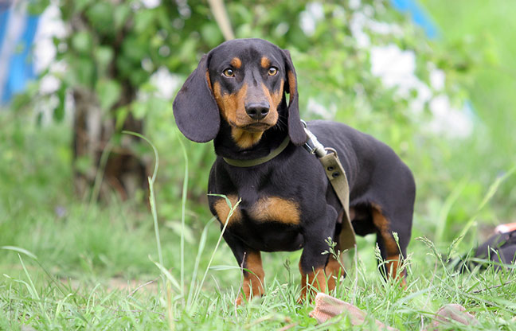

A legnagyobb kutyák

A legtekintélyesebb méretekkel megáldott, vagyis a legnehezebb a tibeti masztiff. Ez a
tekintélyt parancsoló, monumentális jószág átlagosan 80-90 kg, marmagassága átlagosan 65 cm. Bár
csak második a sorban a következő nagyság az ír farkaskutya "csupán" 60 kg, de 80 cm-es
marmagasságával termetre ő a legnagyobb kutyafajta. Őt követik sorban a kaukázusi juhászkutya, a
német dog és a bernáthegyi lejjebb csúsztak a rangsorban csekély 70-80 kg-os testtömegükkel.
A legkisebb kutyák

Hozzájuk képest talán még kisebbnek tűnnek a kutyavilág törpéi. A legkisebb mind közül az élénk,
értelmes csivava. Az öleb nem nyom többet 1-3 kg-nál, de létezik 40-50 dkg-os példány is! Súlya
a törpenyúléval vetekszik, százszor könnyebb, mint egy tibeti masztiff. Az apró csivavát az
törpe pincser, affenpinscher, a pekingi palotapincsi, a brüsszeli griffon és a törperattler
követi, átlagosan 1-2 kg-os testtömeggel.
Német juhászkutya

A németjuhász jellemzői:
Nincs még egy olyan kutyafajta, amelyet ilyen sok területen lehet alkalmazni. Eredetileg
pásztorkutyának tenyésztették, a feladata a bárányok őrzése és figyelése volt. Manapság
legtöbbször a rendőrségnél, a hadseregben és a határvédelemnél alkalmazzák, mint
őrző-védőkutyát. Sokszor mentőkutyaként, terápiás kutyaként, vakvezetőként vagy lavinamentő
kutyaként dolgozik. Nem csak a származási otthonában, Németországban számít vezető szolgálati
kutyának, hanem világszerte egyaránt.
Angol bulldog

Az angol bulldog egy zömök testű kutya, amely kinézete ellenére egy kedves és hűséges társ.
Barátságos, nyugodt, türelmes, és rendkívül lojális típus.
A gyerekekért rajong. Emiatt az egyik legnépszerűbb a családi kutyák körében.
Yorkshire terrier

A yorkshire terrier nagyon játékos és energikus kutya. Sok embernek, akinek háziállatként Yorkie-k
vannak, kettő van, mert gyakran különválasztási szorongásuk van, amikor egyedül hagyják őket, és
"nem élvezik egyedül maradni".
Tacskó

A tacskó bátor, energikus, önálló, élénk, hűséges és szociális kutya.
Leggyakoribb színek: a tacskók fekete, fekete-cser, kék, barna, piros, ezüst, fehér.
Annak érdekében, hogy egészségét megőrizzük rendszeres testmozgást igényel.
Sokoldalú fajta, így ajánlott: vadászatra, nyomkövetésre és nem utolsó sorban társasági kutya.